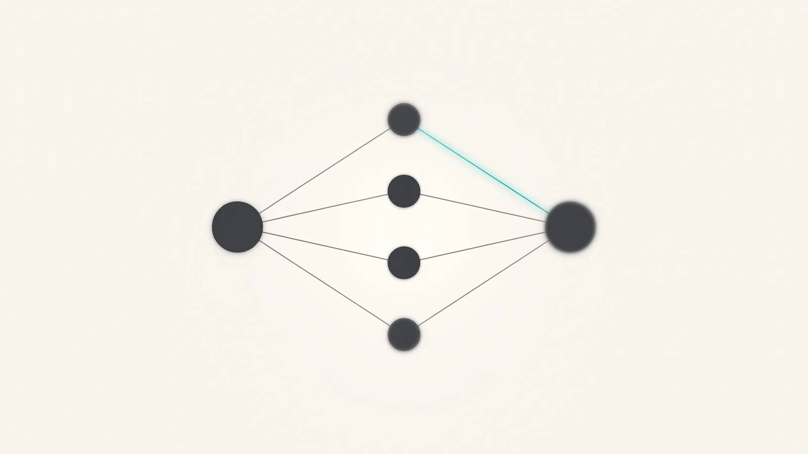

SEO · AI 검색
2026 GEO 완전 가이드: AI가 브랜드를 추천하게 만드는 7가지 전략
GEO는 ChatGPT·Perplexity 같은 생성형 엔진이 답변을 만들 때 브랜드를 근거로 인용하게 만드는 최적화입니다. 순위를 올리는 일이 아니라, 인용하기 쉬운 형태의 사실을 웹 곳곳에 일관되게 남기는 일에 가깝습니다.

핵심 요약
- GEO(Generative Engine Optimization)는 검색 순위가 아니라 AI 답변 안에서의 인용을 목표로 하는 최적화입니다.
- 생성형 엔진은 하나의 질문을 여러 개의 검색 쿼리로 확장한 뒤 수집한 문서에서 근거를 골라 답을 구성하므로, 페이지 전체가 아니라 문단 단위로 인용 가치가 평가됩니다.
- 자사 웹사이트만 최적화해서는 부족하며, 제3자 매체·커뮤니티·리뷰에 남은 언급이 인용 확률에 함께 작용합니다.
- Google은 2026년 5월 AI 기능 최적화 안내에서 llms.txt가 AI 개요·AI 모드에 필요하지 않다고 밝혔으므로, llms.txt를 GEO의 중심에 두는 접근은 재검토가 필요합니다.
- GEO 성과는 트래픽이 아니라 정해둔 질문 세트에 대한 인용 여부와 문맥으로 측정해야 의미가 있습니다.
GEO란 무엇이고 SEO와 무엇이 다른가요?
GEO는 생성형 AI가 질문에 답할 때 브랜드의 콘텐츠를 근거로 인용하게 만드는 최적화입니다. SEO가 '검색 결과 목록에서의 자리'를 다툰다면, GEO는 '이미 만들어진 답변 안에 이름이 들어가는가'를 다툽니다.
차이가 중요한 이유는 사용자의 행동이 달라졌기 때문입니다. 검색 결과 목록에서는 사용자가 열 개의 링크를 훑고 스스로 판단합니다. 생성형 엔진에서는 답이 먼저 제시되고, 사용자는 그 답에 등장한 한두 개의 이름만 기억합니다. 목록의 7위와 답변에 인용되지 않은 상태는 사실상 같은 결과가 됩니다.
| 구분 | SEO | GEO | AEO |
|---|---|---|---|
| 목표 | 검색 결과에서 상위 노출 | AI 답변 안에서 인용 | 질문에 대한 직접 답변으로 노출 |
| 경쟁 단위 | 페이지 | 문단·사실 단위 | 문장·단락 |
| 주요 무대 | Google·Bing 결과 목록 | ChatGPT·Perplexity·AI 개요 | AI 개요·음성 검색·요약 영역 |
| 핵심 자산 | 키워드·링크·기술 SEO | 인용 가능한 사실, 제3자 언급, 엔티티 일관성 | 질문형 구조, 구조화 데이터 |
| 측정 지표 | 순위·유입·전환 | 질문 세트별 인용률·문맥 | 답변 영역 점유·브랜드 언급 |
AI는 무엇을 근거로 인용할 브랜드를 고르나요?
생성형 엔진은 대부분 질문을 그대로 검색하지 않습니다. 하나의 질문을 여러 개의 하위 쿼리로 확장해 문서를 모으고, 그중 답을 구성하기에 적합한 대목을 골라 인용합니다. 즉 평가받는 단위는 사이트가 아니라 문단입니다.
이 과정을 단순화하면 네 단계로 나눌 수 있습니다. 각 단계에서 탈락하는 이유가 다르기 때문에, 어디서 걸리고 있는지부터 확인해야 합니다.
- 01질문 확장
사용자의 한 문장이 여러 개의 검색 쿼리로 분해됩니다. 이때 브랜드가 다루지 않은 하위 질문이 있으면 애초에 후보에 들어가지 못합니다.
- 02문서 수집
크롤러가 접근할 수 있고, 자바스크립트 없이도 본문이 읽히는 페이지가 후보가 됩니다. 접근이 차단되어 있거나 렌더링에 의존하는 페이지는 여기서 빠집니다.
- 03근거 선별
질문에 바로 답하는 문단, 수치·조건·절차가 명확한 대목이 우선 선택됩니다. 수식이 많고 결론이 뒤에 나오는 글은 뽑히기 어렵습니다.
- 04답변 구성
여러 출처의 근거가 합쳐져 하나의 답이 됩니다. 이때 여러 문서에서 같은 사실이 반복 확인되는 브랜드가 더 자주 이름과 함께 등장합니다.

여기서 실무적으로 중요한 결론이 나옵니다. 인용은 신뢰의 결과이기도 하지만, 형식의 결과이기도 합니다. 같은 수준의 전문성을 가진 두 회사가 있다면, 사실을 문단 단위로 잘라 명확하게 쓴 쪽이 인용됩니다.
전략 1~3: 콘텐츠를 '인용 가능한 형태'로 바꾸기
가장 먼저 손댈 곳은 글의 구조입니다. 내용을 바꾸지 않고 배치만 바꿔도 인용 확률이 달라집니다.
전략 1. 질문 단위로 쪼개고, 답을 앞에 둔다
소제목을 실제 검색 질문 형태로 쓰고, 그 아래 첫 두세 문장에서 결론을 먼저 말합니다. 배경 설명과 근거는 그다음입니다. 이 구조는 AI가 그대로 인용해도 말이 되는 최소 단위를 만들어 줍니다.
전략 2. 인용 가능한 사실 단위를 늘린다
표, 번호 목록, 체크리스트, 정의 문장은 AI가 뽑아 쓰기 가장 쉬운 형태입니다. 특히 "A는 ~이다", "A와 B의 차이는 ~이다" 같은 정의 문장은 답변에 거의 그대로 옮겨집니다. 아티클마다 표 하나, 정의 문장 셋을 목표로 삼으면 충분합니다.
전략 3. 엔티티를 일관되게 유지한다
브랜드명 표기, 사업 영역 설명, 대표 서비스명이 홈페이지·회사소개·외부 프로필·보도자료마다 다르면 AI는 이를 같은 대상으로 묶지 못합니다. 국문·영문 표기, 한 줄 소개, 서비스 명칭을 하나로 고정하고 모든 채널에 동일하게 반영하는 작업이 GEO의 기초 공사입니다.
콘텐츠 점검 체크리스트
- H2가 사용자가 실제로 검색할 질문 형태로 쓰여 있는가
- 각 섹션 첫 문단만 읽어도 답이 되는가
- 아티클에 표 또는 비교 목록이 최소 1개 있는가
- "~는 ~이다" 형태의 정의 문장이 있는가
- 브랜드 한 줄 소개가 모든 채널에서 동일한가
전략 4~5: 자사 사이트 밖에서 언급을 만든다
자사 웹사이트만 고쳐서는 한계가 있습니다. 생성형 엔진은 여러 출처에서 반복 확인되는 정보를 더 신뢰하기 때문에, 제3자 공간에 남은 언급이 인용 확률에 직접 작용합니다.
전략 4. 제3자 매체·커뮤니티에 근거를 남긴다
업계 전문 매체 기고, 파트너사 블로그, 협회·전시회 페이지, 리뷰 플랫폼, 그리고 사용자들이 실제로 질문을 주고받는 커뮤니티가 대상입니다. 자사 홍보문을 그대로 복사해 뿌리는 방식이 아니라, 각 공간의 맥락에 맞는 정보로 기여해야 실제로 남습니다.
전략 5. 비교·목록형 콘텐츠에 등재된다
"OO 분야 업체 비교", "OO 솔루션 추천" 같은 목록형 콘텐츠는 AI가 추천 질문에 답할 때 특히 자주 참조합니다. 이런 목록에 브랜드가 정확한 설명과 함께 실려 있는지, 잘못된 정보로 실려 있지는 않은지 주기적으로 점검할 필요가 있습니다.
전략 6~7: 기술적 기반 — llms.txt는 지금 어떤 위치인가요?
기술적으로는 두 가지가 핵심입니다. AI 크롤러가 본문에 접근할 수 있어야 하고, 페이지의 의미가 구조화된 형태로 함께 제공되어야 합니다. 반면 최근 GEO 논의에서 자주 앞세워지는 llms.txt는 기대만큼의 근거가 확인되지 않은 상태입니다.
전략 6. 크롤러 접근과 렌더링을 정리한다
robots.txt에서 어떤 AI 크롤러를 허용할지 의도적으로 결정하고, 핵심 본문이 자바스크립트 실행 없이도 HTML에 담기도록 합니다. 서버 응답 속도, 정규 URL(canonical) 정리, 사이트맵 관리처럼 기존 기술 SEO 작업이 그대로 GEO의 기반이 됩니다.
전략 7. 구조화 데이터로 의미를 명시한다
Organization, Article, BreadcrumbList, Product 같은 schema.org 마크업은 페이지의 주체와 주제를 기계가 오해 없이 읽게 해 줍니다. 특히 Organization 마크업으로 회사명·설명·대표 URL·공식 프로필을 연결해 두면 브랜드 엔티티를 하나로 묶는 데 도움이 됩니다.
llms.txt에 대한 현재 상황
llms.txt는 사이트 정보를 AI에게 요약해 전달하자는 제안으로 등장했지만, 2026년 8월 현재 검색 엔진 차원의 공식 지원은 확인되지 않습니다. Google은 2026년 5월 발행한 AI 기능 관련 안내에서 llms.txt가 AI 개요·AI 모드에 필요하지 않다고 밝혔고, John Mueller는 이를 과거의 keywords 메타 태그에 비유하며 AI 서비스들이 이 파일을 요청하지 않았다고 언급했습니다.
다만 일부 개발자 문서 영역에서는 llms.txt를 실제로 활용하는 사례가 있습니다. 정리하면 제작 비용이 낮으므로 만들어 두는 것 자체는 손해가 아니지만, 이것을 GEO의 핵심 수단으로 삼는 접근은 근거가 부족합니다. 예산과 시간은 콘텐츠 구조와 오프사이트 언급에 먼저 배분하는 편이 합리적입니다.
| 항목 | 현재 효용 | 권장 우선순위 |
|---|---|---|
| AI 크롤러 접근 허용·차단 정리 | 직접적 — 접근이 막히면 인용 자체가 불가 | 높음 |
| 서버 렌더링된 본문 HTML | 직접적 — 본문이 읽혀야 근거로 선택됨 | 높음 |
| Organization·Article 구조화 데이터 | 간접적 — 엔티티 인식과 주제 파악에 기여 | 중간 |
| llms.txt | 제한적 — 검색 엔진의 공식 지원 미확인 | 낮음(저비용이므로 선택적 적용) |
GEO 성과는 어떻게 측정하나요?
GEO는 순위 도구로 측정되지 않습니다. 측정의 출발점은 '우리 고객이 실제로 물어볼 질문 목록'을 먼저 확정하는 일입니다.
- 01질문 세트 정의
고객이 구매 전에 던지는 질문 20~30개를 국문·영문으로 정리합니다. 카테고리 질문, 비교 질문, 문제 해결 질문을 고르게 섞습니다.
- 02기준선 측정
주요 생성형 엔진에 같은 질문을 넣고 브랜드 언급 여부, 언급 문맥, 함께 등장한 경쟁사를 기록합니다. 시작 시점의 상태를 남겨 두는 것이 핵심입니다.
- 03주기적 재측정
월 1회 같은 조건으로 반복합니다. 생성형 엔진의 답변은 변동이 있으므로 한 번의 결과가 아니라 추세로 판단합니다.
- 04유입 측면 확인
웹 분석에서 생성형 엔진 도메인을 통한 유입을 별도 세그먼트로 분리하고, 그 유입의 행동과 문의 전환을 함께 봅니다.
무엇부터 시작해야 하나요?
한 번에 일곱 가지를 다 할 필요는 없습니다. 진단으로 시작해 콘텐츠 구조를 정리하고, 그다음 오프사이트로 넓히는 순서가 현실적입니다.
- 1개월차 — 질문 세트 정의와 기준선 측정, 크롤러 접근·렌더링 점검, 브랜드 엔티티 표기 통일
- 2~3개월차 — 핵심 질문에 대응하는 아티클을 인용 가능한 구조로 제작하고 기존 페이지의 도입부를 직답형으로 재작성
- 4~6개월차 — 제3자 매체 기고와 비교·목록형 콘텐츠 등재, 잘못된 정보 정정 요청, 월간 재측정으로 추세 확인
글로파인드는 이 과정을 AI 가시성 진단에서 시작해 콘텐츠 제작과 오프사이트 신뢰 신호 구축까지 하나의 흐름으로 운영합니다. 검색과 AI를 분리해 운영하면 같은 콘텐츠를 두 번 만들게 되고, 어느 쪽에서도 충분한 성과가 나오지 않습니다.
자주 묻는 질문
GEO를 하면 SEO는 안 해도 되나요?
그렇지 않습니다. 생성형 엔진은 대부분 웹 검색으로 문서를 모은 뒤 답을 구성하기 때문에, 검색에서 잘 수집되는 상태가 곧 인용의 전제 조건이 됩니다. 크롤링·인덱싱·본문 렌더링 같은 기술 SEO 기반이 무너져 있으면 GEO 작업도 성립하지 않습니다. GEO는 SEO를 대체하는 것이 아니라 그 위에 얹는 층으로 이해하는 편이 정확합니다.
GEO 성과는 언제부터 보이나요?
콘텐츠 구조 개선처럼 자사에서 통제 가능한 항목은 비교적 빠르게 반영되는 반면, 제3자 언급과 신뢰 신호 축적은 시간이 걸립니다. 글로파인드는 SEO를 통상 3~6개월, GEO를 콘텐츠 품질과 오프사이트 신호에 따라 1~3개월 내 변화가 관찰되는 영역으로 안내합니다. 다만 생성형 엔진의 동작은 계속 바뀌므로 지속적인 모니터링을 전제로 계획해야 합니다.
llms.txt는 만들어야 하나요, 안 만들어도 되나요?
필수는 아닙니다. Google은 2026년 5월 AI 기능 최적화 안내에서 llms.txt가 AI 개요와 AI 모드에 필요하지 않다고 밝혔습니다. 다만 파일 작성 비용이 매우 낮고 두는 것 자체로 불이익이 확인된 바도 없으므로, 다른 우선순위 작업을 마친 뒤 선택적으로 적용하는 정도가 적절합니다. llms.txt만 만들어 두고 GEO를 했다고 보기는 어렵습니다.
우리 브랜드가 AI에서 어떻게 인식되는지 어떻게 확인하나요?
가장 빠른 방법은 직접 물어보는 것입니다. 브랜드명, 대표 제품명, 그리고 브랜드명을 넣지 않은 카테고리 질문 세 유형을 각각 주요 생성형 엔진에 넣어 답변을 기록해 보십시오. 아예 언급되지 않는 경우, 잘못된 정보로 언급되는 경우, 경쟁사만 언급되는 경우는 각각 원인과 처방이 다릅니다. 글로파인드는 이 과정을 AI 가시성 진단으로 제공합니다.
영문 콘텐츠가 없어도 GEO가 가능한가요?
국내 시장만 대상이라면 국문만으로도 진행할 수 있습니다. 다만 해외 바이어가 영어로 질문하는 상황을 겨냥한다면 영문 콘텐츠가 필요합니다. 생성형 엔진은 질문 언어와 같은 언어의 문서를 근거로 삼는 경향이 있어, 국문 콘텐츠만으로는 영어 질문의 답변에 인용되기 어렵습니다. 해외 진출이 목적이라면 영문 콘텐츠를 기본으로 설계하는 편이 효율적입니다.
콘텐츠를 얼마나 자주 발행해야 하나요?
발행 빈도보다 질문 커버리지가 중요합니다. 고객이 실제로 던지는 질문 20~30개를 목록화한 뒤, 아직 답하지 않은 질문부터 하나씩 채우는 방식이 효율적입니다. 얕은 글을 자주 올리는 것보다 하나의 질문에 확실히 답하는 글이 인용 관점에서 유리합니다. 기존 글의 도입부를 직답형으로 고쳐 쓰는 작업도 신규 발행만큼 효과가 있습니다.
함께 보면 좋은 페이지
검색엔진과 AI, 두 채널 모두에서 발견되게 만듭니다.
전략 세션 신청